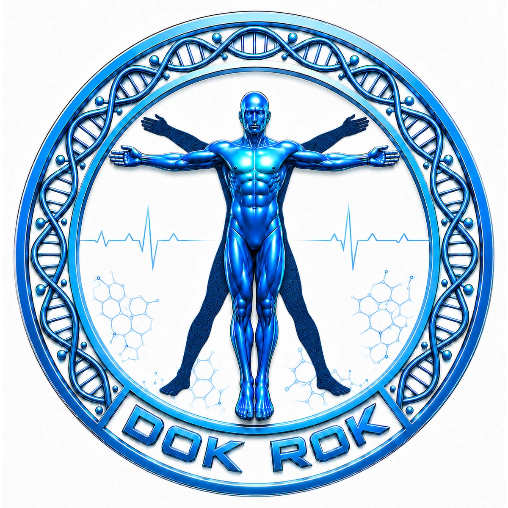
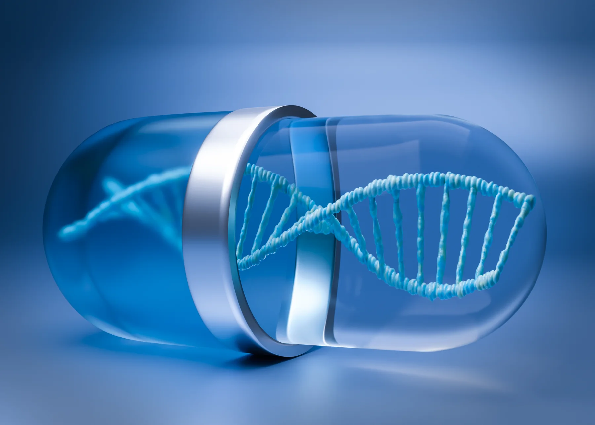

Vitaminbestimmung in der Neurologie
Warum die Vitamine A, B1, B12, C und D in neurologischer Diagnostik und Versorgung Beachtung verdienen.
Beitrag lesen →Humanmedizin × Life Sciences
DOK ROK verbindet Humanmedizin, Biowissenschaften, pharmazeutische Entwicklung und evidenzorientierte Beratung – für verantwortungsvolle Lösungen, die Prävention, Lebensqualität und medizinische Innovation zusammenbringen.

Leistungen
Wir verbinden wissenschaftliche Tiefe mit praktischer Umsetzbarkeit – klar, interdisziplinär und qualitätsorientiert.
Neue Darreichungsformen, Wirkstoffkombinationen und anwendungsnahe Produktkonzepte mit medizinisch-wissenschaftlicher Logik.
Mehr erfahren →Die Verbindung von Biochemie, Genetik, Ernährung und personalisierter Medizin – mit Fokus auf Sicherheit, Dosierung und Prävention.
Forschungsansatz →Beratung, Schulung, Planung, Validierung, Evaluation und SOP-Strukturen für Healthcare- und Life-Science-Projekte.
Leistungsfelder →
NutraMedicine
Ein ganzheitlicher Denkansatz, der nicht bei Symptomen stehen bleibt, sondern biologische Zusammenhänge, individuelle Voraussetzungen und präventive Möglichkeiten einbezieht.
Aktuelle Fachbeiträge

Warum die Vitamine A, B1, B12, C und D in neurologischer Diagnostik und Versorgung Beachtung verdienen.
Beitrag lesen →Ein Blick auf genomische Gemeinsamkeiten, biologische Unterschiede und den verantwortungsvollen Einsatz von Pilzpräparaten.
Beitrag lesen →Wie Patientenverfügungen, klinische Beobachtung und multidisziplinärer Dialog schwierige palliative Entscheidungen unterstützen können.
Beitrag lesen →Patente & Projektpartnerschaften
DOK ROK sucht seriöse Investoren, Forschungs- und Umsetzungspartner, die patentbasierte Gesundheitsinnovationen strukturiert weiterentwickeln. Entscheidend sind wissenschaftliche Substanz, klare Verantwortlichkeiten und ein gemeinsamer Blick auf nachhaltige Wirkung.
Sprechen Sie mit uns über Forschung, Produktkonzepte, Qualität oder medizinisch-wissenschaftliche Projekte.